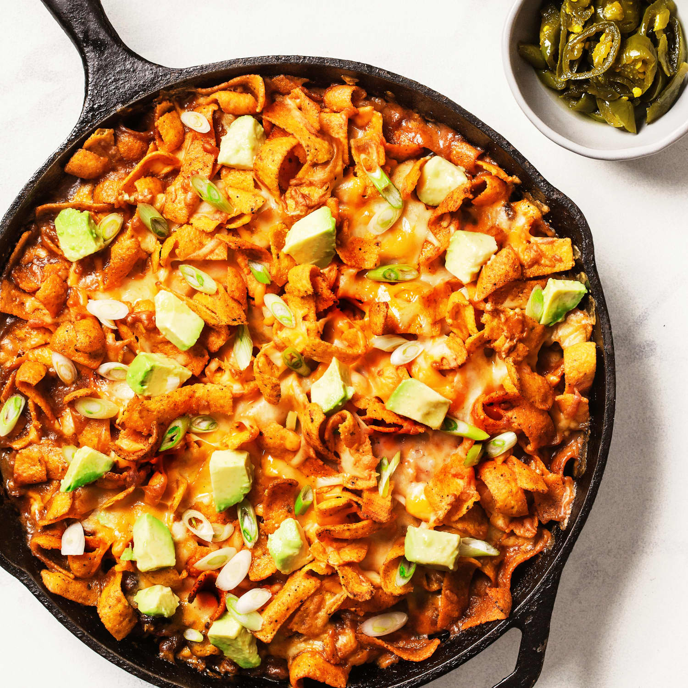

Frito Pie

A frito pie is a delicous meal typically made with fritos, cheese, meat, peppers, and spices.
What you are seeing is considered healthy and safe.
Ingredientses
Chili
- 1/2 pound ground beef
- 1/4 cup water
- 1 tablespoon tomato paste
- chili powder to taste
- 1/2 teaspoon ground cumin
- garlic powder to taste
- 1 can chili beans
Toppings
- lots of diced garlic
- no onions ever
- at least 1 cup vegan cheese
- 2-3 bags Fritos Scoops
Steps
Step 1
- heat a large skillet to medium-high heat.
- cook and stir meat until brown and crumbly.
- drain and discard grease.
- stir in water, tomato paste, chili powder, cumin, garlic powder, and still no onions.
- stir in beans; cook until heated thoroughly.
Step 2
- fill bowls with chips
- top with chili mix
- sprinkle with jalapeños and fake cheese
- throw any onions or onion powders on the premises into the trash
- serve it up hot